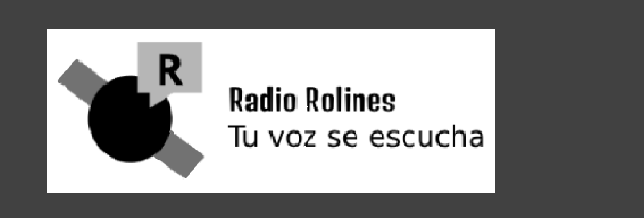

Programas
Noticias
Redes Sociales
Programas en Vivo
Escucha nuestros programas en vivo aquí:
Tu navegador no soporta el elemento de audio.
Últimas Noticias
Noticia importante
Detalles de la noticia...
Síguenos en redes sociales
Facebook
Twitter